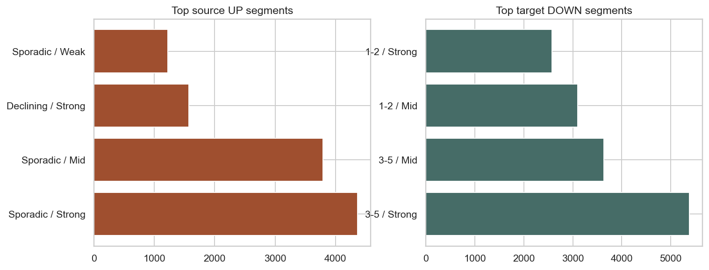
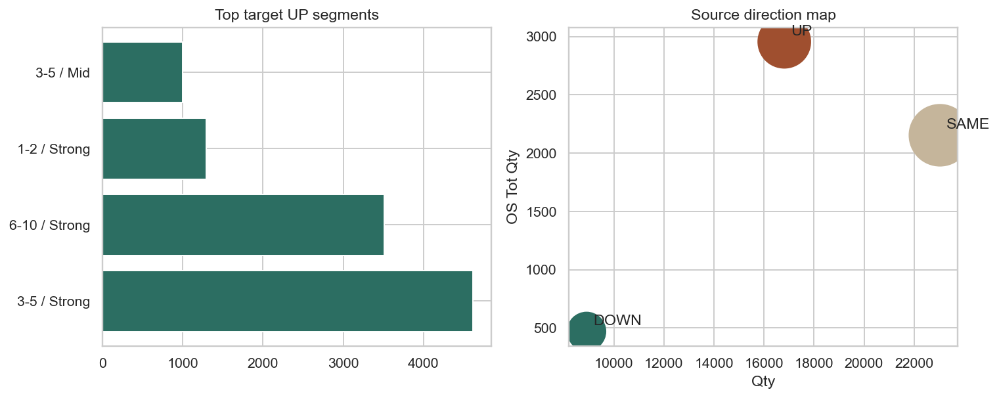
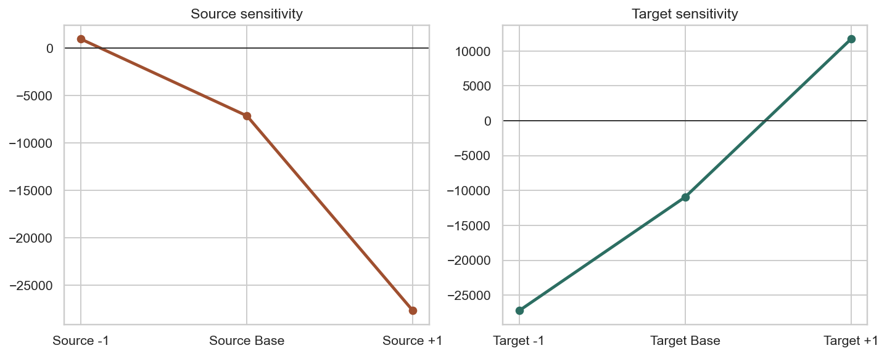

Backtest v5 je objemovy odhad po SKU podle zmeny ML levelu proti aktualnimu EntityList ML. Cte se obousmerne: kde ubrat i kde pridat, s temer neutralnim target netto dopadem.
| Smer | SKU | Qty | OS Tot | RO Tot | Odhad qty change |
|---|---|---|---|---|---|
| UP | 11833 | 16812 | 2955 | 7616 | -13537 |
| DOWN | 6030 | 8909 | 470 | 1114 | 6387 |
| SAME | 18907 | 23033 | 2153 | 7885 | 0 |
Net source dopad: -8 594 ks, ale zaroven odemyka nove source growth pockets.
| Smer | SKU | Qty | Avg ST 4M | Nothing-sold 4M | All-sold 4M | Odhad qty change |
|---|---|---|---|---|---|---|
| UP | 12146 | 13611 | 80.3 | 0.1 | 59.9 | 12345 |
| DOWN | 21142 | 25350 | 22.0 | 71.7 | 16.1 | -23299 |
| SAME | 8343 | 9793 | 53.2 | 28.5 | 35.4 | 0 |
Net target dopad: -416 ks, tedy skoro neutralni target strana s velkym UP i DOWN ramenem.


| Scenar | Odhad qty change |
|---|---|
| Source -1 | 932 |
| Source Base | -7150 |
| Source +1 | -27659 |
| Target -1 | -27236 |
| Target Base | -10954 |
| Target +1 | 11706 |

Base v5 je stredni varianta. Plosny posun o jeden level na kterekoli strane uz vede k mnohem agresivnejsimu objemovemu zasahu.